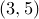

set origin <x>, <y>
The ‘origin’ setting controls the default location of graphs on a multiplot. For example, the command:
set origin 3,5
would cause the next graph to be plotted at position  centimetres on the multiplot page. The set origin command is of little use outside multiplot mode.